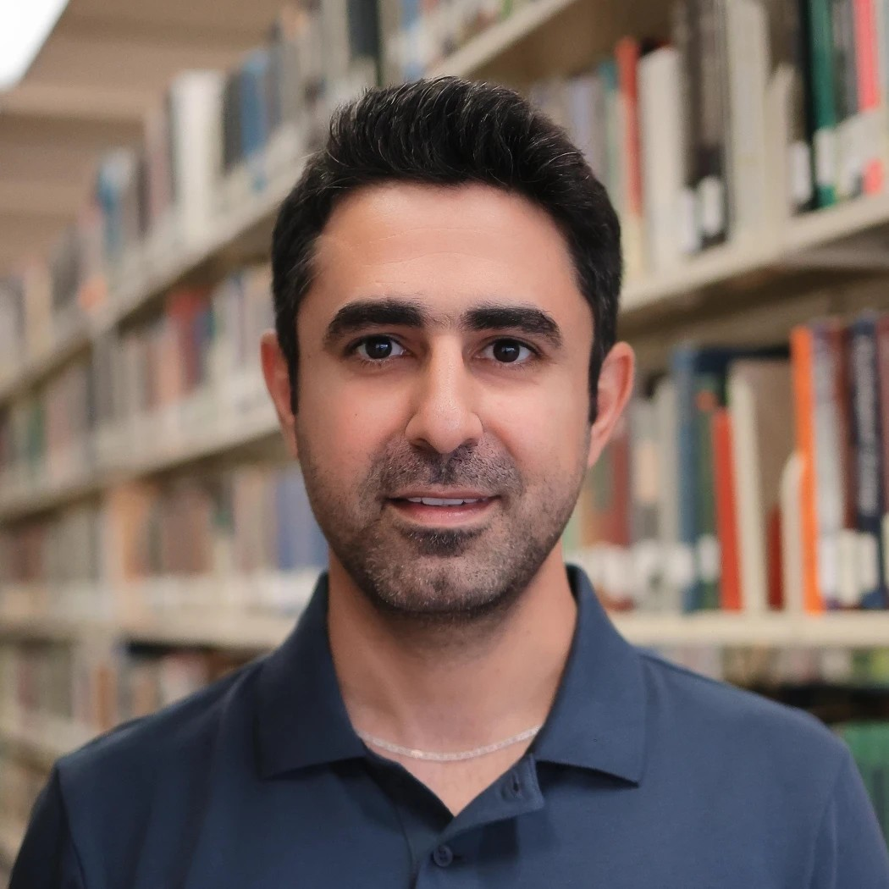

RG

Rambod Ghandiparsi
University of Texas at San Antonio
Bio
I’m a PhD student in Computer Science at UT San Antonio, advised by Dr. Xiaoyin Wang in the Software Evolution, Reliability, and Security Lab. My research sits at the intersection of software engineering, requirements engineering, software evolution, and AI-assisted software engineering, with a focus on evidence-grounded software assurance and trustworthy AI-assisted development.
You can reach me at rambod.ghandiparsi@utsa.edu, or find me on Google Scholar, LinkedIn, and GitHub. Here’s my CV.
Research
- Software engineering & requirements engineering
- AI-assisted software engineering & LLMs
- Software evolution, traceability & change assurance
- Software testing & regression analysis
- Empirical & human-centered software engineering
Publications
Regression Bugs in Post-Release GitHub Issue Reports: A Pilot Study
Ghandiparsi, Lawal, K C, Bokaei Hosseini · CrowdRE at IEEE REW
2026
Demystifying Feature Requests: Leveraging LLMs to Refine Feature Requests in Open-Source Software
K C, Ghandiparsi, Herron, Heaps, Bokaei Hosseini · IEEE RE
2025
Towards Better Requirements from the Crowd: Developer Engagement with Feature Requests in OSS
K C, Ghandiparsi, Herron, Heaps, Bokaei Hosseini · CrowdRE at IEEE REW
2025
Beyond Text-to-SQL for IoT Defense: A Comprehensive Framework for Querying and Classifying IoT Threats
Pavlich, Ebadi, Tarbell, et al., incl. Ghandiparsi · TrustNLP at ACL
2025
Toward Regulatory Compliance: A Few-Shot Learning Approach to Extract Processing Activities
K C, Ghandiparsi, Slavin, Ghanavati, Breaux, Bokaei Hosseini · ESPRE at IEEE REW
2024
Software Artifacts
- Regression bug classification · replication package, CrowdRE 2026
- IoT-SQL dataset · 10,985 text-SQL pairs, 239,398 traffic records
Experience
Doctoral Researcher
Data-Driven Software Engineering Lab, UT San Antonio
2024 – Now
Graduate Teaching Assistant
Department of Computer Science, UT San Antonio
2024 – Now
Graduate Research Assistant
Data-Driven SE Lab · Business School · Human-Centered NLP Lab, UTSA
2023 – 2024
Marketing & Sales Manager, previously R&D Team Lead
Parand Designers and Innovators Ltd.
2013 – 2022
Education
Ph.D., Computer Science
UT San Antonio
2024 – Now
M.S., Data Analytics
UT San Antonio
2023
MBA
K. N. Toosi University of Technology
2017
B.S., Electrical Engineering
Tafresh University
2013